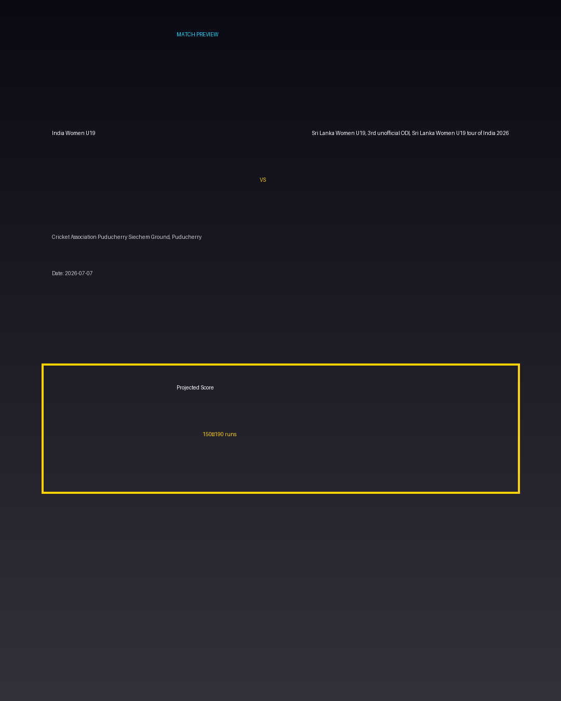

India Women U19 vs Sri Lanka Women U19, 3rd unofficial ODI, Sri Lanka Women U19 tour of India 2026
Date: 2026-07-07
Venue: Cricket Association Puducherry Siechem Ground, Puducherry


Form Guide
India Women U19: 🟩 🟥 🟩 🟩 🟥
Sri Lanka Women U19, 3rd unofficial ODI, Sri Lanka Women U19 tour of India 2026: 🟥 🟩 🟥 🟥 🟩
Pitch Report
Balanced wicket with moderate scoring conditions.
Projected Score
150–190 runs
Key Players
- India Women U19 Key Batter — Batsman
- India Women U19 Strike Bowler — Bowler
- Sri Lanka Women U19, 3rd unofficial ODI, Sri Lanka Women U19 tour of India 2026 Key Batter — Batsman
- Sri Lanka Women U19, 3rd unofficial ODI, Sri Lanka Women U19 tour of India 2026 Strike Bowler — Bowler
Advanced Win Probability
India Women U19: 64.3%
Sri Lanka Women U19, 3rd unofficial ODI, Sri Lanka Women U19 tour of India 2026: 35.7%
AI Match Prediction
Based on venue conditions, a projected scoring range of 150–190 runs, recent form (with India Women U19 appearing slightly stronger), and the pitch profile ('Balanced wicket with moderate scoring conditions.'), this matchup appears to present India Women U19 entering as clear favorites. Early momentum and top-order execution will likely determine the winner.
